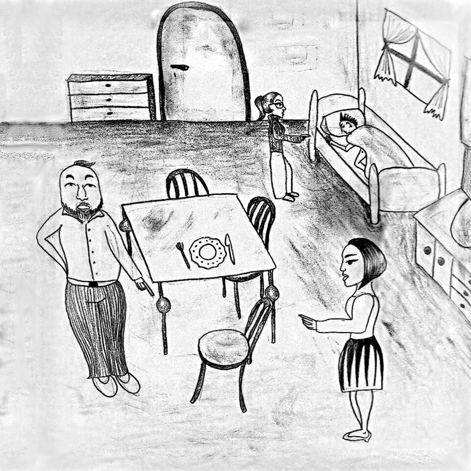

« předchozí článek | obsah čísla | následující článek »
Každé evropské velkoměsto si kolem sebe časem vytvořilo rekreační oblasti. Tak například Markétovu takto slouží Borová hora. Je to takový kopec nad údolím řeky Akvy porostlý borovým lesem. V lese jsou rozptýleny chaty, ani ne moc blízko, ani ne moc daleko od sebe.
Vlastně tam nic zajímavého není. Na jedné straně sráz do řeky, na druhé straně pole. Žádná vesnice, žádná hospoda, žádná památka. Řeka je navíc od Borové hory oddělena frekventovanou silnicí a ona frekventovaná silnice navíc tvoří nábřeží řeky, takže si o nějakém rybaření mohou místní jen nechat zdát.
A přesto je tam něco, co tam chataře drží – klid. A klid na Borové hoře hledal i jistý Míša. Kráčel si to po asfaltce mezi chatami a rozhlížel se kolem. Za celou dobu, co šel, potkal jen dva chodce a z toho jen jeden šel. Byl to tatínek, kterému na ramenou seděla malá holčička. Držela se ho za uši. Míša je pozdravil a oba mu slušně odpověděli. Byli slušně vychovaní a malá holčička byla navíc bez předsudků. Mnoho lidí by totiž Míšu nepozdravilo – byl to ten typ, jakého se slušní lidé tak trochu obávají – trochu feťák, trochu pankáč, trochu anarchista už od pohledu.
Možná si říkáte, že ho teď povrchně odsuzuji podle vzhledu, ale Míša skutečně nebyl žádný svatoušek. Právě se chystal provést trestný čin a vyhlížel si na to vhodnou chatu.
„Objekt střežen americkým pitt bull terriérem“ – tak tohle znělo příliš výhružně a do překonávání vysokého laťového plotu zakončeného žiletkovým drátem se Míšovi taky nechtělo.
Druhá chata zjevně patřila nějakému zbohatlíkovi. Hezky opravená, pozemek posekaný, poctivý plot, nad vjezdem jakýsi ozdobný skleněný nesmysl a masivní bezpečnostní kamera. Zbohatlíkova chata taky nebyla vhodná, určitě bude skvěle hlídaná a navíc – parkující mustang dokazoval, že je zbohatlík právě uvnitř. Míša přešel k další chatě.
Tohle bylo ono – anténa na střeše, plot trochu nakřivo. Televize tam určitě bude, ale majitel tam nebyl celou zimu, soudě dle zarostlé cestičky.
Míša se rozhlédl a pak začal opatrně obcházet pozemek. Našel to místo, které potřeboval. Plaňky tam byly trochu povalené a stačilo do nich jemně strčit, aby se rozestoupily. Míša prošel plotem a díru za sebou zamaskoval. Ani zámek mu nekladl odpor, byl to starý polský kousek na jehož překonání stačil kus drátu a hrubé síly. A tak se Míša dostal do chaty, a naplnil tak skutkovou podstatu trestného činu vloupání.
Procházel chatou a zkoumal, co by se dalo ukrást a co použít nebo požít. Měl v plánu tu pár nocí přečkat a pak si odnést nějakou tu kořist. To byl jediný Míšův plán, jinak skutečně patřil ke generaci „no future“.
Ve špajzu našel zavařeninu. Taková zavařenina vydrží dlouho, a tak se rozhodl trochu najíst. Vzal si tedy první talíř, který na něj koukal z prosklené poličky a nandal si. Posadil se do čela stolu a začal jíst. Když se dosyta najedl, ustlal si v té menší ložnici a šel spát. Smrákalo se a Míša utíkal už třetí den bez pořádného spánku. \kHvezdy Následující ráno v ulici Jurije Gagarina na Markétovském sídlišti nakládal pan Medvěd věci do kufru auta. Jeho manželka mezitím sundávala prádlo pověšené na balkóně. I oni hledali klid.
Pan Medvěd byl provozní dispečer v Markétovském dopravním podniku a paní Medvědová byla mzdová účetní tamtéž. Pan Medvěd měl za sebou namáhavý týden plný mimořádných provozních situací a paní Medvědová zase inspekci z finančního úřadu. Dovolenou už potřebovali oba víc než dost.
Nasedli do auta. „Požádala jsem paní Rösnerovou, ať nám mezitím vybírá schránku,“ řekla paní Medvědová. Pan Medvěd souhlasně zamručel a nastartoval auto.
Cesta ze sídliště uběhla rychle. U divadla nabrali svou dceru, která poblíž bydlela. Slečna Medvědová vystudovala na univerzitě klasickou filozofii, tudíž nevěděla kdo je, odkud přichází a kam jde. Toho času dělala recepční v jedné kancelářské budově a po týdnu, kdy do prosklené budovy recepce pražilo slunce, byla na dovolenou zralá i ona a s radostí si ji vybrala.
„Ahoj mami, ahoj tati,“ pozdravila své rodiče. Pan Medvěd jen souhlasně zamručel a paní Medvědová se jí začala vyptávat, jak se jí daří, a co je nového, jako kdyby něco nového bylo.
Autem je to z Markétova na Borovou horu asi jen čtvrt hodiny. A kromě poněkud delšího čekání na semaforu u Východního nádraží to tak bylo i ten den. Za čtvrt hodiny od chvíle, kdy nabrali u divadla svou dceru, dorazili manželé Medvědovi do chatové oblasti Borová hora. Na asfaltce mezi chatami i oni potkali jen jednoho chodce – tatínka, jemuž seděla na ramenou malá holčička a držela se ho za uši. Z auta se ovšem blbě zdraví, a tak ho nepozdravili.
A tohle bylo ono – cíl jejich cesty – jejich chata. Paní Medvědová vystoupila a otevřela vrata. Pan Medvěd vjel na pozemek, zlámal autem rostliny na zarostlé cestičce. Od minulého podzimu tu nebyli. Zavřeli za sebou vrata a šli dovnitř. Zámek od chaty se trochu zasekával, ale už to byl starý polský kousek a na jeho překonání stačil správný grif a trocha hrubé síly. Jako každý rok vešli do obývacího pokoje, něco ale tentokrát bylo špatně.
„Kdo to seděl na mé židli?“ zabručel vztekle pan Medvěd. Jeho židle byla skutečně vysunutá. „Kdo to jedl z mého svátečního talíře?“ zhrozila se paní Medvědová. Sváteční talíř ležel ledabyle pohozený na stole, špinavý od zavařeniny. „Á! Kdo to spí v mé postýlce?“ zaječela slečna Medvědová z ložnice.
Seběhli se tam. V posteli ležel rozespalý Míša, kterému teprve těď začalo docházet, kdo ho svým ječením vlastně probudil.
Zatímco pan Medvěd přemítal, zda ta flinta po dědečkovi, která visí nad krbem, skutečně střílí, Míša opatrně vstával. Vtom rychle popadl své boty a dal se na útěk. Nepokoušeli se mu v tom zabránit, byli stejně překvapení jako on. \kHvezdy Když potom sečetli škody a zjistili, že kromě snědené zavařeniny, špinavého nádobí a rozestlané postele vlastně nic hrozného ten lupič nenapáchal, paní Medvědová umyla sváteční talíř, slečna Medvědová si vyměnila povlečení na posteli a pan Medvěd zastrčil svou židli na čele stolu. Teď si konečně mohli užít svého zaslouženého klidu.
A co Míša? Ten po svém zběsilém útěku taky našel klid. Podařilo se mu dostat za plot oné opevněné chaty, kde ho roztrhal americký pitt bull terriér.
A to je konec pohádky, milé děti.